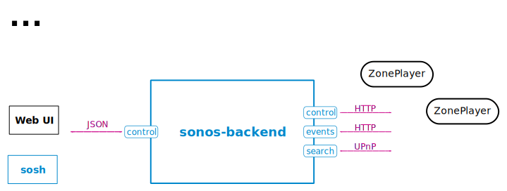

sonos-cli
About
sonos-cli is a command line interface to control 'Sonos ZonePlayer'.
This piece of software is highly unstable and absolutely unfinished.

Net::UPnP
Net::UPnP is unable to handle the Transfer-Encoding headers. sonos-cli requires a fixed Net::UPnP version which handles Transfer-Encoding: chunked correctly (pull request on github.com).
This package is shipped with a fixed version.
Install
sonos-cli contains a Perl daemon and requires the following perl packages:
- AnyEvent (EV backend is prefered)
- AnyEvent::HTTPD
- JSON::Any
- Log::Any
- Log::Dispatch
- Net::UPnP
- Proc::Daemon
- Proc::PID::File
Take a look at USAGE howto use sonos-cli.